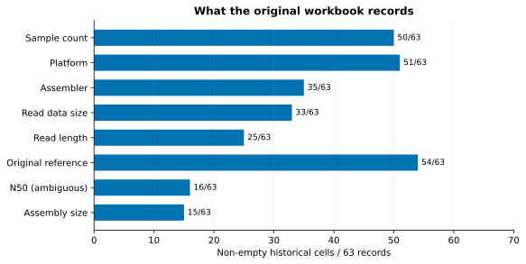
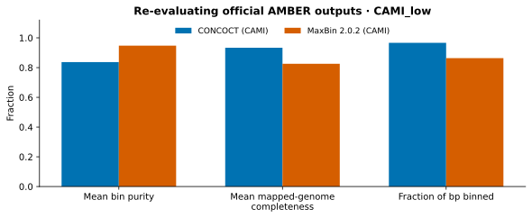
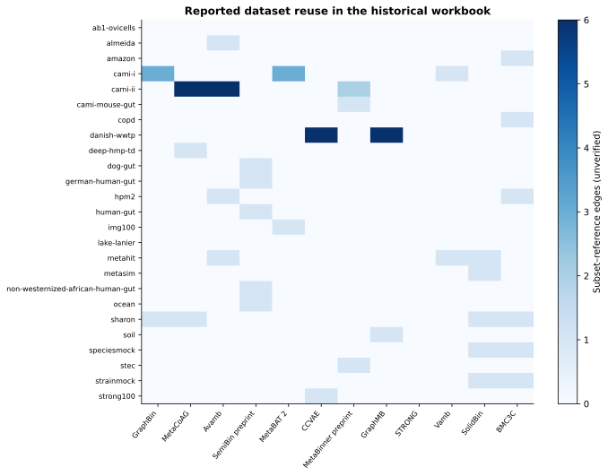
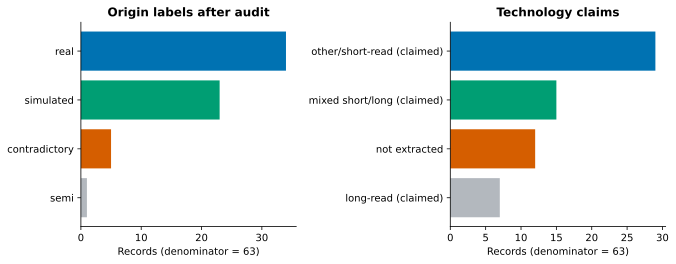

Variants carry meaning
63 subset records form 33 provisional families. A shared accession does not make two subsets identical. Raw reads, assemblies and truth mappings are separate objects.
Research resource · independent extension · 05 November 2026
A traceable atlas of metagenomic binning datasets, an audit of their metadata, and a small evaluation reproduced with a common protocol.
Four questions, a bounded answer
Metagenomic binning groups assembled DNA fragments into candidate genomes. Different communities, assemblies, ground truths and filters make published scores difficult to compare. This atlas makes those distinctions explicit.
63 subset records form 33 provisional families. A shared accession does not make two subsets identical. Raw reads, assemblies and truth mappings are separate objects.
82 flags expose ambiguous quantities, roles and identifiers. Cell presence describes the original workbook; publication reporting quality is not estimated.
Match sample IDs, assembly, sequence universe, gold standard, filters and metric definitions. Do not pool scores across incompatible protocols.
Official CONCOCT and MaxBin outputs for CAMI_low were re-evaluated with AMBER 2.0.8. No binners were executed and no raw reads downloaded.

A common evaluation protocol

CONCOCT: mean purity 0.837, mean mapped-genome completeness 0.933. MaxBin: 0.948 and 0.826, respectively.
These are historical official examples on simulated data. Original CONCOCT binary version is not established; MaxBin 2.0.2 follows the upstream label. Completeness over mapped genomes differs from CAMI 1 completeness over all truth genomes.
Metrics CSV · Protocol · Execution recordSearch the historical collection
Each row is a historical subset, not necessarily an independent dataset. Values remain historical/unverified unless separately checked. Ground-truth availability has not been extracted for these rows.
Loading catalog…
| Subset / identity | Origin | Platform claim | Environment claim | Accession | Source cell |
|---|
Full dataset CSV · All raw claims and statuses · Audit flags · Field definitions
Reuse and coverage


Inspect · run · extend
make setup
make reproduce
make test
make experiment
make reproduceInstallation and reproduction · Scoping review · Bibliography · Original-material audit · Technical report (Markdown)
The 2024 NOVA undergraduate project, supervised by André Lamúrias, researched papers and organized dataset tables. This 2026 independent extension adds software, provenance, audit, repository-assisted review and a common-protocol demonstration; it does not imply the original supervisor's involvement or approval.
Original administrative documents, video and third-party illustrations are not redistributed. All figures here are newly generated. This release is an auditable starting point, not an exhaustive literature review or a leaderboard of current methods.